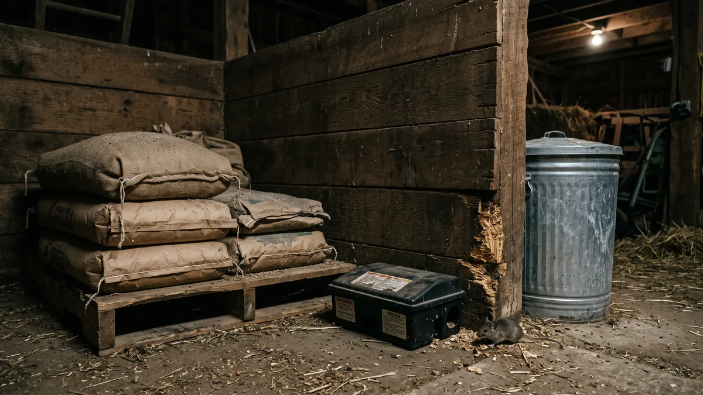

Kümeste fare, sıçan ve haşere kontrolü: kalıcı çözüm
Bir çuval yem beklediğinden çabuk bitiyorsa, hırsız gökten inmiyor; tabanın altında, senden önce sofraya oturmuş bir ortağın var. Fareyi, sıçanı ve haşereyi kümesten kalıcı söküp atmanın sırasını sahadan anlatıyorum.

Yem çuvalın beklediğinden bir hafta erken bitiyorsa, tartıda hata yok. Geceleri kümesin bir köşesinden hışırtı geliyorsa, rüzgâr değil o. Bir sabah folluğun altında kabloyu kopmuş, iki civcivi kayıp buluyorsan mesele tilki de değil. Fare kümesin en sessiz ortağıdır; kirasını ödemez, senin yeminle karnını doyurur, üstüne bir de fatura bırakır. Bir çift fare uygun koşulda bir yılda birkaç yüz bireye ulaşır. Bu yüzden "iki tane var, ne olacak" dediğin an, aslında yüzlercesinin davetiyesini imzalamış olursun.
Fareyle sıçanı hafife alan çok. Oysa bunlar sadece yem yemez. Salmonella, leptospira, kuş vebası gibi etkenleri kümesin içinde gezdirir; yeme, suya, altlığa pislik bırakır. Küçük civcivi doğrudan avlar. Kabloyu, su hortumunu, yemlik askısını kemirir; bir gecede otomatik yemleyicinin kablosunu kesip sabaha aç bir sürü bırakabilir. Yani karşımızdaki üç ayrı dert: yem hırsızlığı, hastalık ve tahribat. Üçünü de tek tek çözeceğiz, ama sıra çok önemli. Yanlış sırayla uğraşan, zehir döküp yemi açık bırakan adam, fareyi besleyip zehri süs olsun diye koymuş olur.
Kümeste fare neden bu kadar zor gidiyor?
Çünkü çoğu üretici işi tersten yapıyor. Önce zehir alıyor, kapan kuruyor, sonra hâlâ fare varsa "bu zehir tutmadı" deyip başkasını deniyor. Fare aptal değil. Ona bedava, bol ve güvenli bir sofra kurmuşsan, senin acı zehrini niye yesin? Karnı tok fare kapana da girmez, yeme de bakmaz. İşin sırrı üç adımda ve tam bu sırada: önce yemi kes, sonra sığınağı kapat, en son av. İlk iki adımı atlayıp doğrudan üçüncüye geçen herkes yıllarca fareyle savaşır, kazanamaz.
Önce yemi kes: aç fare kalıcı olmaz
Fareyi kümesinde tutan tek şey yemdir. Yemi güvenceye alırsan, nüfusun yarısı birkaç hafta içinde kendiliğinden dağılır; kalanı da aç kaldığı için senin kapanına, istasyonuna mecbur olur. İşte bu yüzden mücadele zehirle değil, yem deposuyla başlar.
- Yem çuvalını yere koyma. Fare çuvalı bir gecede deler. Yemi kapaklı sac bidona, metal variye ya da ağzı sıkıca kapanan galvaniz kutuya boşalt. Plastik bidonu bile kemirir; kalın metal en garantisi. Depoyu zeminden 20-30 cm yükseğe, ayaklı bir sehpaya al.
- Gece yemliğini kaldır. Tavuk zaten karanlıkta yemez. Akşam tünediğinde tabandaki açık yemliği topla, dökülen yemi süpür. Fareye gece boyu açık büfe bırakmazsın. Sabah tekrar koyarsın; bu on dakikalık iş, en etkili fare önlemidir.
- Dökülen yemi süpür. Yemliğin altına saçılan yem, farenin asıl beslendiği yerdir. Yemlik yüksekliğini tavuğun göğsü hizasına ayarla ki eşeleyip yere dökmesin. Günlük yem hesabını ve dökülme kaybını tavuk başına günlük yem hesabı yazısında ayrıntılandırdım; oradaki fireyi düşürürsen hem cebin hem fare işini rahatlar.
- Suyu da unutma. Sıçan susuz duramaz. Açık su yalağı, damlatan nipel, altı göllenmiş suluk onu ayakta tutar. Kapalı nipelli suluğa geç, altındaki nemi kurut.
Sonra sığınağı kapat: sıçan nereden giriyor?
Yemi kestin ama delikler açıksa, fare gider komşunun kümesinden karnını doyurup senin sıcak köşende yatar. İkinci iş, kümesi ona kapatmak. Fare 1,5 cm'lik, sıçan 2 cm'lik bir delikten geçer; yani kalemin sığdığı her yerden içeri girer. Gözünü buna göre ayarla.
- Ek yerlerini ve delikleri kapat. Duvar-taban birleşimi, kapı altı, havalandırma menfezi, boru geçişleri. Küçük delikleri çelik yünü (bulaşık teli değil, kaba çelik yün) tıka; fare çeliği kemiremez. Üstüne harç ya da poliüretan köpük çek.
- Kenar tel gömülü olsun. Fare çoğu zaman aşağıdan, tabanın kenarından girer ya da altını oyar. Kümesin çevresine 6-6,5 mm göz aralıklı galvaniz kafes teli, 25-30 cm derinliğe ve dışa doğru L şeklinde gömdüğünde, kazarak giren fareye set çekmiş olursun. Bu tek önlem, toprak zeminli kümeslerde farkı en çok yaratan iştir.
- Zeminle arayı kes. Toprak zemin fareye hem yol hem yuva verir. Zemin tartışmasında beton, şap ve kilit taşının fareye karşı ne sağladığını kümes zemini ne olmalı yazısında karşılaştırdım; kaçak avıyla uğraşmadan önce oradan başlamak isteyebilirsin.
- Kümes çevresini temiz tut. Duvara dayalı odun yığını, ot bürümüş kenar, atıl saman balyası; hepsi farenin gündüz sığınağı. Kümesin 1 metre çevresini açık ve çıplak bırak. Sığınağı olmayan fare ortada kalır, avlanması kolaylaşır.

1.000 Tavukluk Tavuk Çadırı
Toprak zeminli, ek yerleri açık kümeslerde fare her mevsim baştan başlar; 1000 tavukluk Tavuk Çadırı'nın etek brandası kenar boyunca yere gömülüp sabitlendiğinden alttan giriş kapanır, pürüzsüz iç yüzeyinde farenin oyacağı köşe, haşerenin sindiği çatlak kalmaz, 81 ilde anahtar teslim kurulur.
En son av: kapan, istasyon, kedi ve zehir
Yem kesildi, delikler kapandı. Şimdi kalan popülasyonu temizleme sırası. Aç ve sığınaksız kalan fare artık senin kurduğun tuzağa mecbur.
Mekanik kapan en temiz yöntemdir; ölüyü görürsün, tavuğa ve kuşa zehir riski taşımaz. Yaylı kapanı fare yolunun üstüne, duvar dibine paralel koy; fare açıkta değil, kenar boyunca yürür. Yem olarak fındık ezmesi, kavrulmuş ceviz ya da bir parça yağlı tohum iş görür. İlk birkaç gün kapanı kurmadan, sadece yemli bırak; fare güvenmeye başlayınca kur. Bu sabır, verimi ikiye katlar.
Yem istasyonu zehirli yemi kapalı bir kutuda sunar; tavuk, kuş ve çocuk erişemez, sadece fare girer. Zehir kullanacaksan mutlaka kapalı istasyonda kullan, asla açığa serpme. Açık dökülen zehri tavuk gagalar, gübreyle beslenen köpek-kedi ikincil zehirlenir, yaban kuşu ölür. Zehirle ölen farenin bir köşede kokması ve o leşi yiyen kedinin zehirlenmesi de ayrı dert. Bu yüzden zehir benim için son çare, istasyonsuz asla.
Kedi caydırıcıdır ama tek başına çözüm değil. İyi bir avcı kedi fareyi kümes çevresinden uzak tutar; fakat sıçanın irisiyle baş edemez, üstelik kedinin kendisi civcive ve yumurtaya musallat olabilir, tüyüyle-pisliğiyle biyogüvenliği bozabilir. Kediyi kümesin içine değil, çevresine bir avcı olarak konumla.
Sinek, larva ve kırmızı akar: nemli altlığın bedeli
Haşere derdi çoğu zaman fareyle aynı kökten beslenir: nem ve pislik. Yaz aylarında ıslak altlık ve biriken gübre, sineğin larva bıraktığı ideal ortamdır. Bir hafta ihmal edilen nemli bir köşe, birkaç günde binlerce larvaya döner. Çözüm ilaçlamadan önce kurutmaktır. Altlığı kuru tut, ıslanan noktayı hemen değiştir, gübreyi biriktirme. Altlık seçimi ve nem yönetimini kümes altlığı seçimi ve yönetimi yazısına göre kurarsan sinek işini kaynağında bitirirsin. Havalandırma zayıfsa nem hiç kurumaz; koku ve nem kontrolünü kümes havalandırması ve koku kontrolü yazısındaki dengeyle çöz.
Bir de şu bağı unutma: farenin ve yaban kuşunun kümese soktuğu en sinsi yolcu kırmızı akardır. Bu minik kan emici gündüz çatlakta, tünek altında saklanır, gece tavuğun kanını emer; sürüyü uykusuz, halsiz, verimsiz bırakır. Fareyle mücadele ederken çatlakları kapatman, aynı zamanda akara saklanacak yer bırakmaman demektir. Bit ve kırmızı akarın aylık koruma rutinini tavuklarda bit ve kırmızı akar yazısında adım adım verdim. Civciv büyütürken fare riski katlanır; ilk haftalarda brooderı kapalı ve korunaklı tut, dökülen yemi hemen topla.
Belirti-önlem tablosu: neyi görünce ne yap
Aşağıdaki tabloyu kümes kapısının arkasına as. Sol sütundaki belirtiyi gördüğün gün, sağ sütundaki işi ertelemeden yap.
| Belirti | Ne anlama gelir | Hemen yap |
|---|---|---|
| Yem beklenenden erken bitiyor | Fare/sıçan yemle besleniyor | Yemi metal bidona al, gece yemliğini kaldır |
| Duvar dibinde 1-2 cm delikler, toprak yığıntısı | Aktif fare yuvası ve yol | Deliği çelik yünüyle tıka, kenar teli göm |
| Siyah pirinç tanesi gibi pislikler | Fare, tazeyse aktif nüfus | Yol üstüne kapan-istasyon kur |
| Kesik kablo, kemirilmiş hortum | Tahribat, yangın-arıza riski | Kabloyu metal spirale al, kemirgeni avla |
| Kaybolan civciv, kırık yumurta | İri fare/sıçan avlanıyor | Civcivi kapalı brooderda tut, çevreyi kapat |
| Yaz aylarında yoğun sinek, larva | Nemli altlık/gübre birikmiş | Islak altlığı değiştir, gübreyi boşalt |
| Uykusuz, halsiz, solgun ibikli sürü | Kırmızı akar şüphesi | Çatlakları kapat, tünek altını ilaçla |
Fare ve kemirgen kontrolü aslında biyogüvenliğin bir dalıdır; kapıdan gireni durdurmakla, tabandan gireni durdurmak aynı disiplinin iki yüzü. Sürüyü hastalıktan koruyan bütün zinciri kümeste biyogüvenlik ve kuş gribi yazısında topladım; fare mücadelesini oradaki kapı-çizme-karantina düzeniyle birleştirdiğinde savunman tamamlanır.
Şunu aklında tut: fareyi bir gecede bitiren mucize yok. Ama üç haftalık disiplin var. Yemi kilit altına al, delikleri kapat, dökülen taneyi süpür; farenin karnını aç, sığınağını başına yık. O aç ve açıkta kalan fare, artık senin kapanına düşecek kadar çaresizdir. Zehri en sona sakla, kapalı istasyonda kullan, tavuğunu ve kediyi asla riske atma. Kümesini fareye değil, tavuğuna kur.
Sık sorulanlar
Kümeste fareden kalıcı olarak nasıl kurtulurum?
Fare kümese nereden giriyor?
Kümeste fare zehiri kullanmak tavuğa zararlı mı?
Kümeste sinek ve larva neden çoğalıyor?
Kedi kümes faresine çözüm mü?
Fare kümeste hangi hastalıkları taşır?
Projenizi birlikte planlayalım
Kapasitenizi ve bölgenizi yazın; ölçü ve teklifi birlikte çıkaralım.
Kapasitenizi yazın